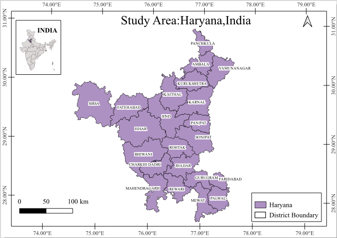
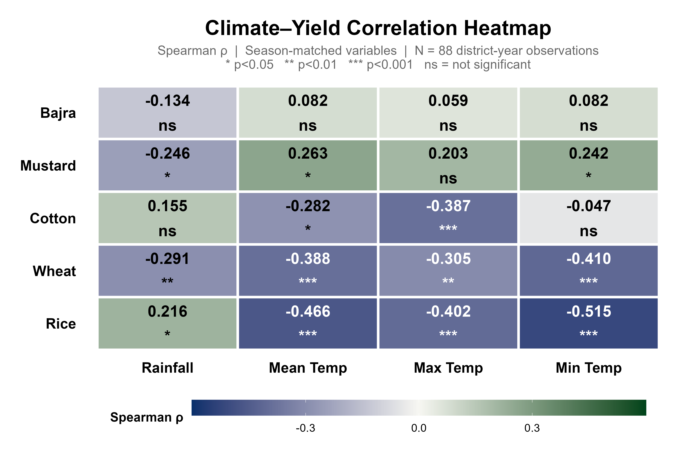
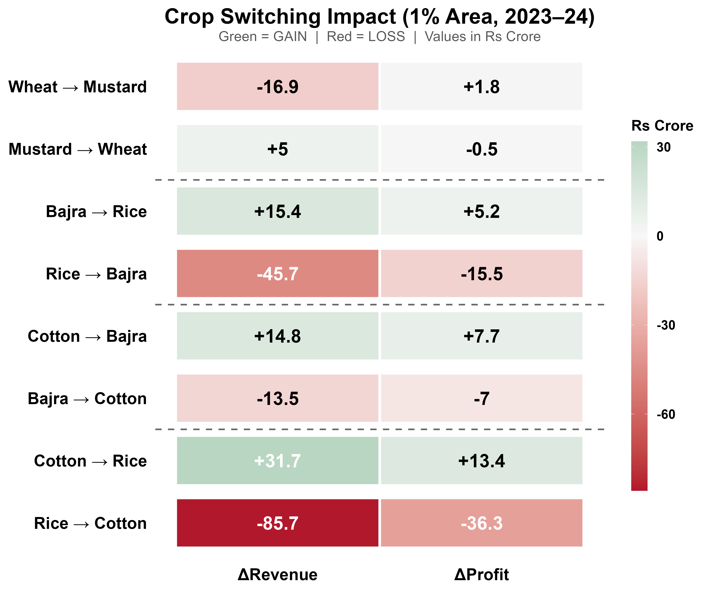
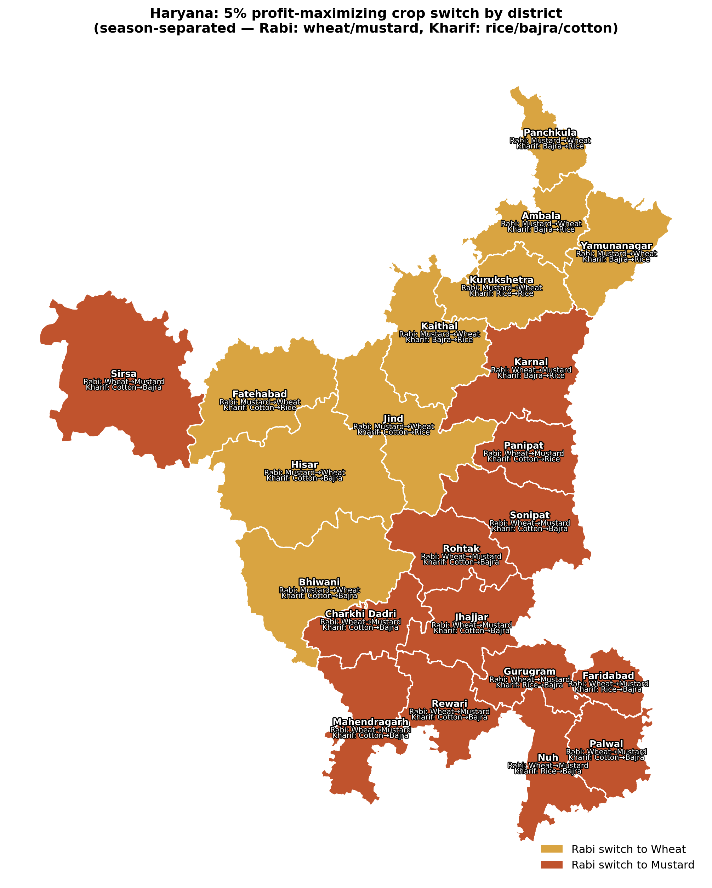
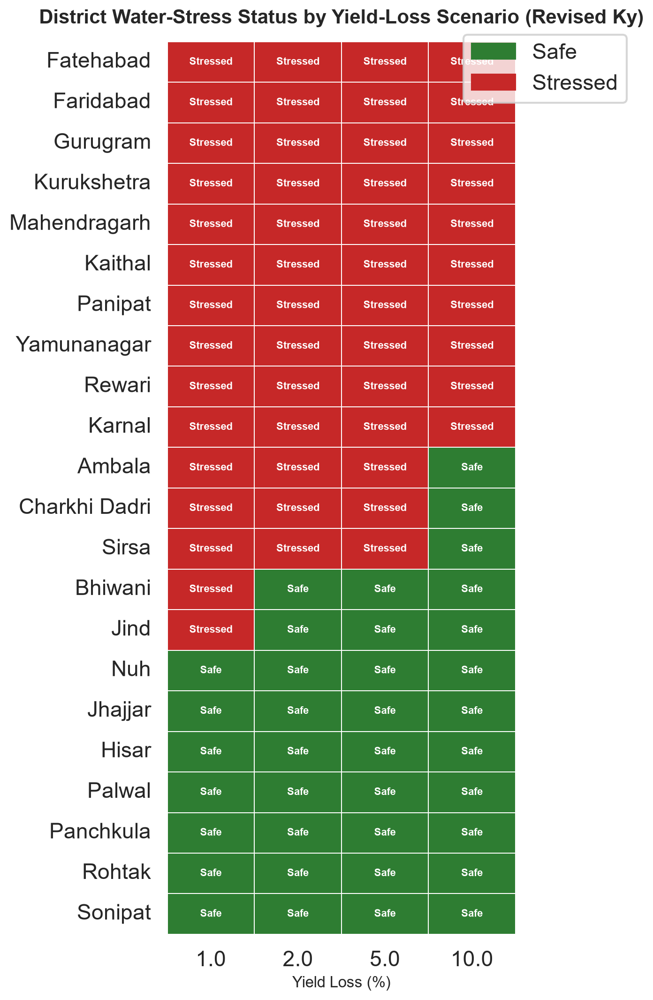

SPARK Internship 2026
SPARK Internship 2026
Haryana is one of India's leading agricultural states and plays a significant role in national food production. However, intensive cultivation of the rice–wheat cropping system and excessive groundwater extraction have resulted in declining groundwater levels across several districts.
This study develops a hydroeconomic optimization framework integrating crop economics, crop water requirements, groundwater availability, and climatic variability to identify sustainable crop diversification strategies across Haryana.
The framework evaluates district-wise crop allocation, groundwater stress, profitability, and potential water savings under different yield-loss scenarios (1%, 2%, 5%, and 10%) to support evidence-based agricultural planning and water resource management.
Develop a hydroeconomic optimization model for sustainable agricultural planning.
All 22 districts of Haryana covering major irrigated agricultural regions.
Interactive WebGIS portal for crop diversification and groundwater management.
The study encompasses all 22 districts of Haryana, located in northwestern India between 27°39′N–30°55′N latitude and 74°28′E–77°36′E longitude. The state covers approximately 44,212 km² and is characterized by a predominantly semi-arid to sub-humid climate.
Agriculture is the backbone of Haryana's economy, with the rice–wheat cropping system occupying a major share of cultivated land. Groundwater supplies nearly 65–70% of irrigation requirements, resulting in severe groundwater depletion across several districts.
This hydroeconomic assessment evaluates groundwater availability, crop economics, climatic variability, and district-wise water stress to identify sustainable crop diversification strategies.

The hydroeconomic framework integrates multi-source datasets with optimization techniques to evaluate sustainable crop allocation and groundwater management across Haryana.
Area, production and yield data (2020–2024) obtained from the Statistical Abstract of Haryana 2024–25
District-wise rainfall and temperature datasets collected from IMD Gridded Rainfall (0.25° NetCDF) and ERA5-Land via Open-Meteo API
Groundwater availability, demand and water gap collected from Haryana Water Resources Atlas 2025 (Annexure III)
Values obtained from Integrated Water Resources Action Plan 2025
Linear Programming model developed in Python using Pyomo to maximize agricultural profit under water constraints.
FAO Yield Response Factor (Ky) approach applied to estimate potential water savings under different yield-loss scenarios.
The hydroeconomic assessment integrates agricultural, climatic, hydrological and economic datasets to identify sustainable crop diversification strategies across Haryana.
Area, Production, Yield & MSP
Rainfall & Temperature
Availability, Demand & Gap
Values adopted from published reports
Leaflet WebGIS Portal
FAO-33 Ky Method
Linear Programming (Pyomo)
Cost • MSP • Net Profit
The hydroeconomic assessment combines climate analysis, economic evaluation, optimization modelling and water-saving assessment to identify sustainable crop diversification strategies for Haryana. Click on any analysis below to explore the detailed findings.
Rainfall–temperature relationship with crop productivity using Pearson and Spearman correlation.
Profit estimation based on crop yield, MSP and cultivation cost under observed and optimized scenarios.
Linear Programming model for maximizing profit under groundwater and land constraints.
District-wise recommended crop allocation for improving water-use efficiency.
Potential groundwater savings under 1%, 2%, 5% and 10% allowable yield-loss scenarios.
Leaflet-based WebGIS visualization of crop allocation, groundwater stress and water-saving potential.
Climate variability plays a crucial role in determining agricultural productivity across Haryana. To examine the influence of climatic factors on crop yield, a correlation analysis was carried out using district-wise rainfall, mean temperature and yield data for the major crops cultivated in the state. Pearson's correlation coefficient was used to quantify the strength and direction of the relationship between climatic variables and crop productivity.

Figure. Correlation matrix showing the relationship between rainfall, temperature and crop yield.
The correlation heatmap illustrates the degree of association between climatic variables and crop yield. Positive values indicate that crop productivity generally increases with increasing rainfall or temperature, whereas negative values indicate an inverse relationship.
The economic assessment was carried out to evaluate the profitability of the existing cropping pattern and compare it with the optimized cropping pattern generated through the hydroeconomic model. Crop-wise net profit was estimated using district-wise yield, Minimum Support Price (MSP), and cost of cultivation data. The optimized profit represents the maximum achievable profit while satisfying land availability and groundwater constraints.
Net profit for each crop was calculated using the following relationship:
The observed profit represents the total agricultural profit under the existing cropping pattern, whereas the optimal profit corresponds to the profit obtained after hydroeconomic optimization.

Figure. Crop Switching Impacts on Profit
Existing cropping pattern
Optimized cropping pattern
≈ 4.88% increase
The optimization results indicate that reallocating crop areas while satisfying groundwater availability and land-use constraints can substantially improve statewide agricultural profitability. The increase in profit demonstrates that sustainable water management and economic benefits can be achieved simultaneously without expanding cultivated land.
A district-wise hydroeconomic optimization model was developed to determine the optimal allocation of cultivated area for major crops in Haryana. The model integrates crop economics with groundwater availability to maximize agricultural profit while maintaining sustainable groundwater utilization. Linear Programming (LP) was implemented in Python using the Pyomo optimization framework.
The optimization model maximizes the total agricultural profit by allocating cultivated area among different crops while satisfying land and groundwater constraints.
where,
Crop area in each district was allowed to vary within ±5% of the observed cultivated area.
Total irrigation water demand was constrained by district-wise groundwater availability.
The total cultivated area within each district remained unchanged during optimization.
Negative crop area allocation was not permitted.
The hydroeconomic optimization model recommends crop diversification in selected districts to improve groundwater sustainability while maintaining agricultural profitability. The map below illustrates the suggested crop transitions generated by the optimization model.

Figure. District-wise recommended crop switching pattern generated using the hydroeconomic optimization model.
The optimization framework reallocates crop area within realistic flexibility limits while ensuring that groundwater demand does not exceed district-wise available resources. The resulting optimal cropping pattern maximizes agricultural profitability without expanding cultivated land and forms the basis for crop-switching recommendations and water-saving assessment presented in the following sections.
Click any district on the map, then use the slider to see how cutting available irrigation water changes crop-wise yield loss, water withdrawn, and profit -- computed live using the same FAO-33 Ky yield-water response equation used in the nonlinear model. This recomputes irrigation and yield at each district's already-optimized crop mix; it does not re-run the full area-reallocation solve.
Click a district on the map to begin.
To evaluate the potential for groundwater conservation, a yield-loss analysis was carried out using the FAO-33 Yield Response Factor (Ky) approach. Four permissible yield-loss scenarios (1%, 2%, 5% and 10%) were considered to estimate the corresponding reduction in crop water requirement and identify districts where water savings could be achieved without substantial loss in agricultural productivity.
The relationship between relative crop yield reduction and evapotranspiration deficit is expressed as:
| Scenario | Allowable Yield Loss |
|---|---|
| Scenario I | 1% |
| Scenario II | 2% |
| Scenario III | 5% |
| Scenario IV | 10% |
The heatmap illustrates district-wise groundwater stress under different allowable yield-loss scenarios. Districts classified as safe indicate sufficient groundwater savings, whereas stressed districts continue to experience groundwater deficits despite optimization.

Figure. District-wise groundwater stress under 1%, 2%, 5% and 10% allowable yield-loss scenarios.
This study integrates agricultural, climatic, groundwater and geospatial datasets obtained from national and state government agencies together with peer-reviewed scientific literature. These datasets formed the basis for hydroeconomic optimization, crop switching analysis and groundwater sustainability assessment.